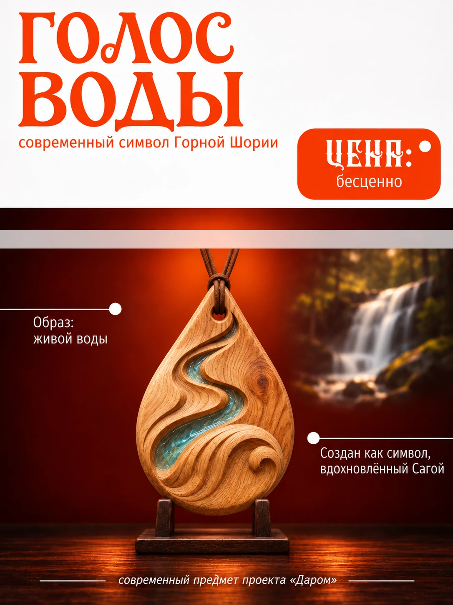

У КАЖДОГО МЕСТА
ЕСТЬ СВОЯ ИСТОРИЯ.
НАЙДИ ТУ,
ЧТО ОТЗОВЁТСЯ ТЕБЕ.
Места, люди и культурные предметы, которые помогают узнать Кузбасс ближе.
03 территории04 места08 историй предметов
ШерегешВодопад СагаТазгол
КУЗБАСС
НА ТВОЕЙ КАРТЕ
Выбери точку на карте — и отправляйся знакомиться с местами, историями и людьми региона.

Истории на карте
Каждая точка — новая история.
Выбирай место и отправляйся в путь.

НЕ ВЕЩЬ.А ИСТОРИЯ.
Культурная лавка · 03
Предметы,
у которых есть
свой голос.
Открой предмет и узнай его историю, а затем добавь в чек место, где хочешь побывать.
01
Знание — лучший сувенир.
Культуру нельзя забрать, но её можно узнать.
Не просто увидеть.
Узнать, сохранить, передать дальше.